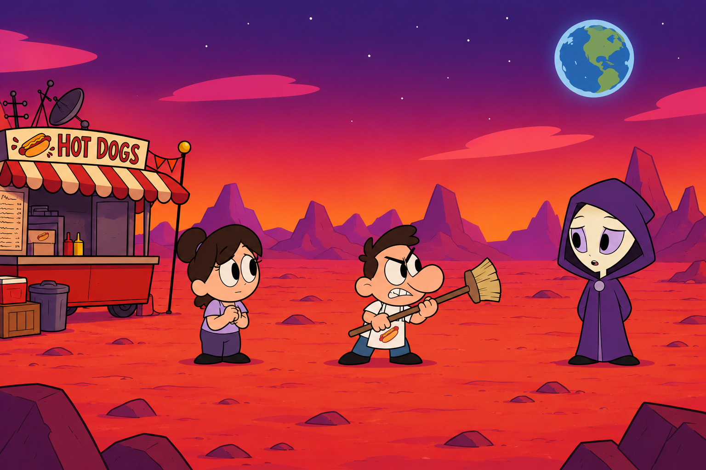
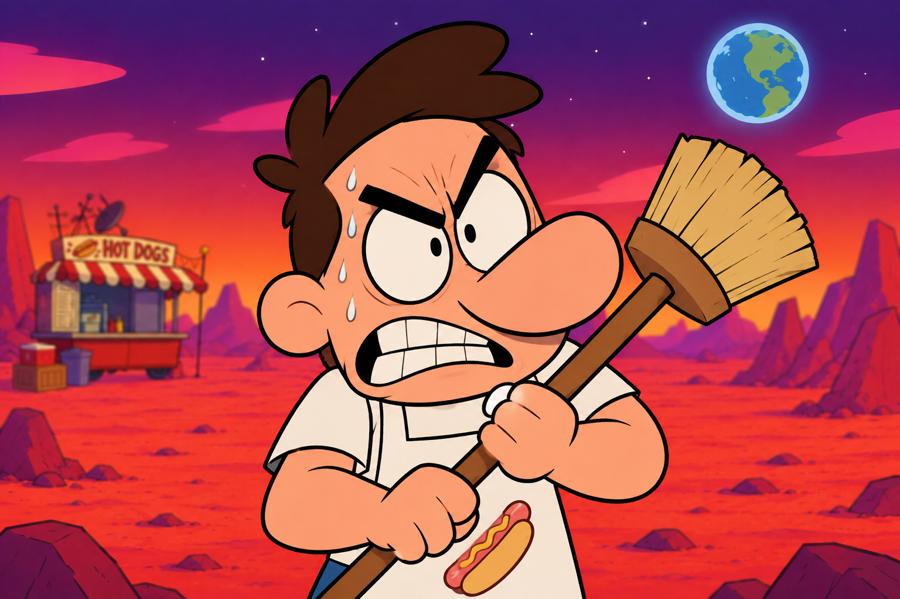
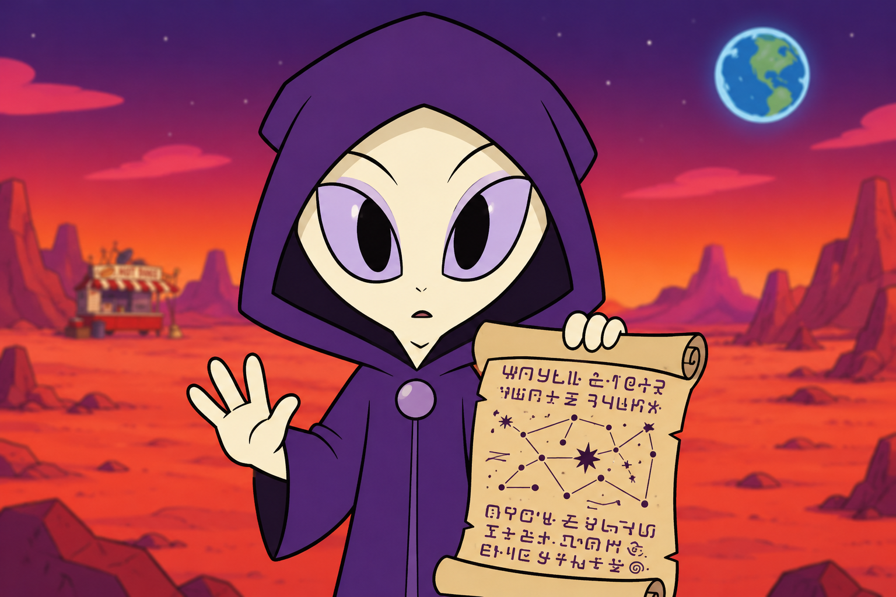
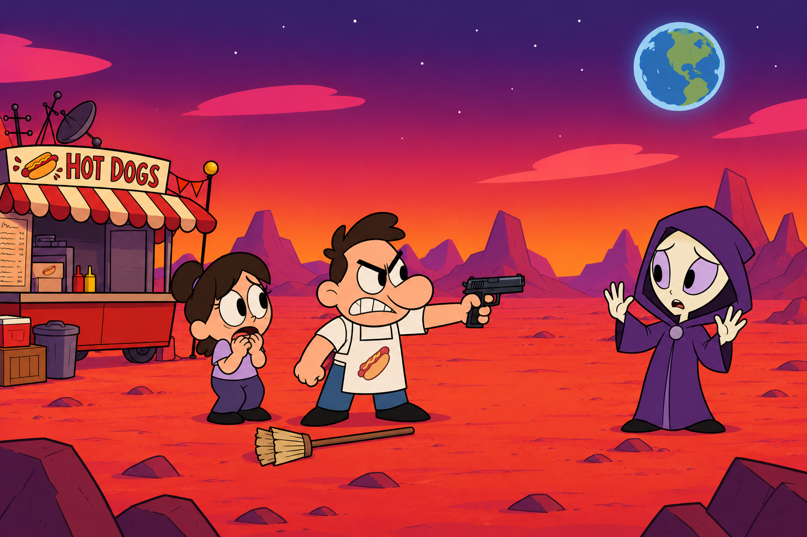

Más tarde ese día...





*(A lo lejos, un extraño visitante se aproxima con calma al puesto de Hot Dogs...)*
"Buenos días, señor Sam. Me gustaría hablar con usted el día de hoy."
"¡¿Qué quieres, marciano?! ¡Lárgate, seguro vienes a contagiarnos con tu extraña enfermedad!"
"Señor, por favor cálmese. Yo me curé de esa enfermedad hace mucho tiempo..."
"¡No me importa! ¿Qué haces aquí? Si es por estos terrenos, ¡te advierto que son míos!"
"¡No voy a permitir que un extraño me quite lo que he construido en este desierto!"
"De hecho, sí es sobre sus terrenos... Mire esto."
"¡Un momento, señor! ¡Es solo un documento! ¡Déjeme explicarle!"
"¡Sam, para por favor! ¡No lo hagas!"